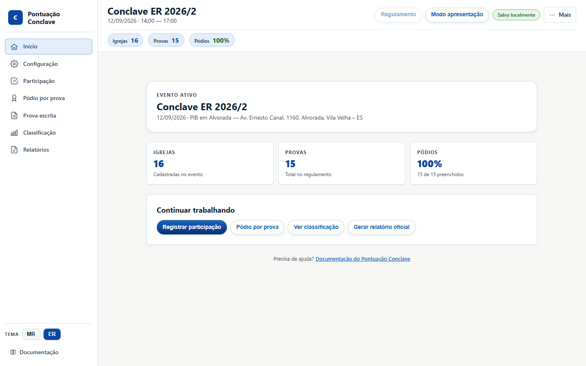
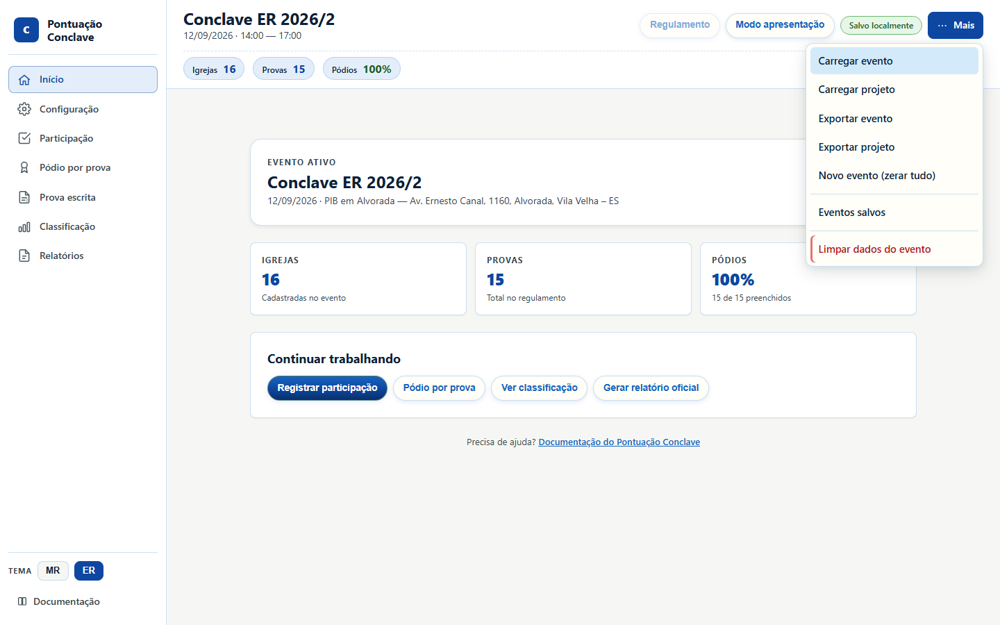
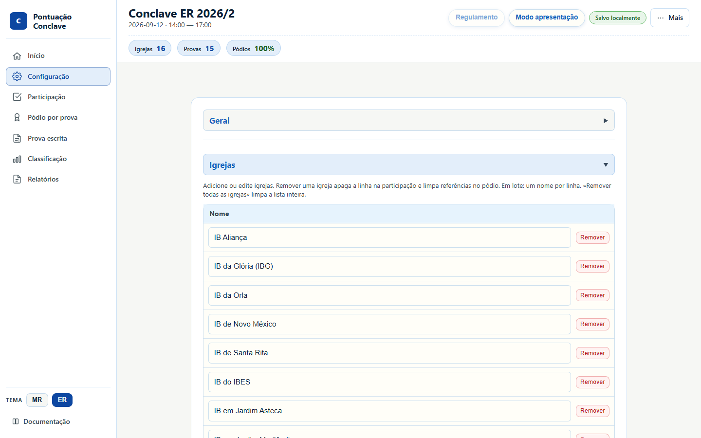
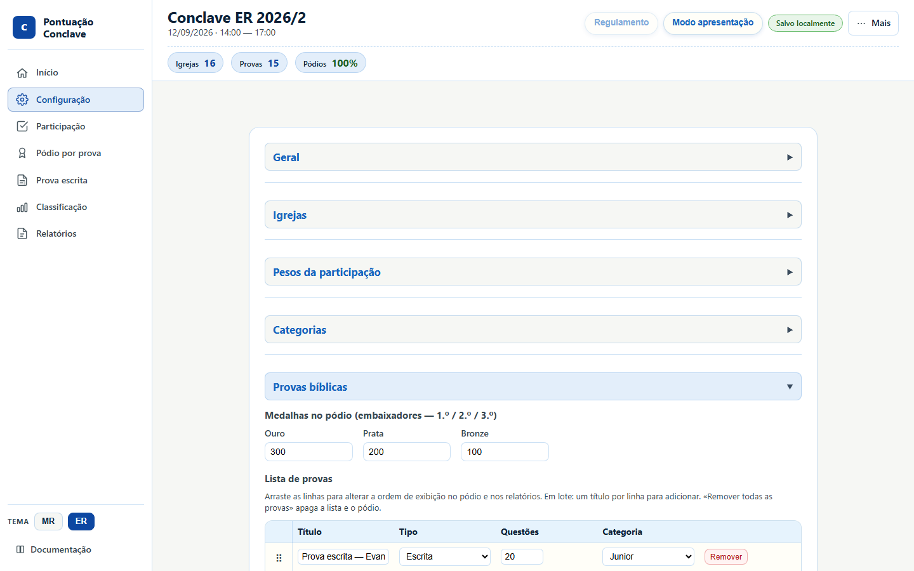
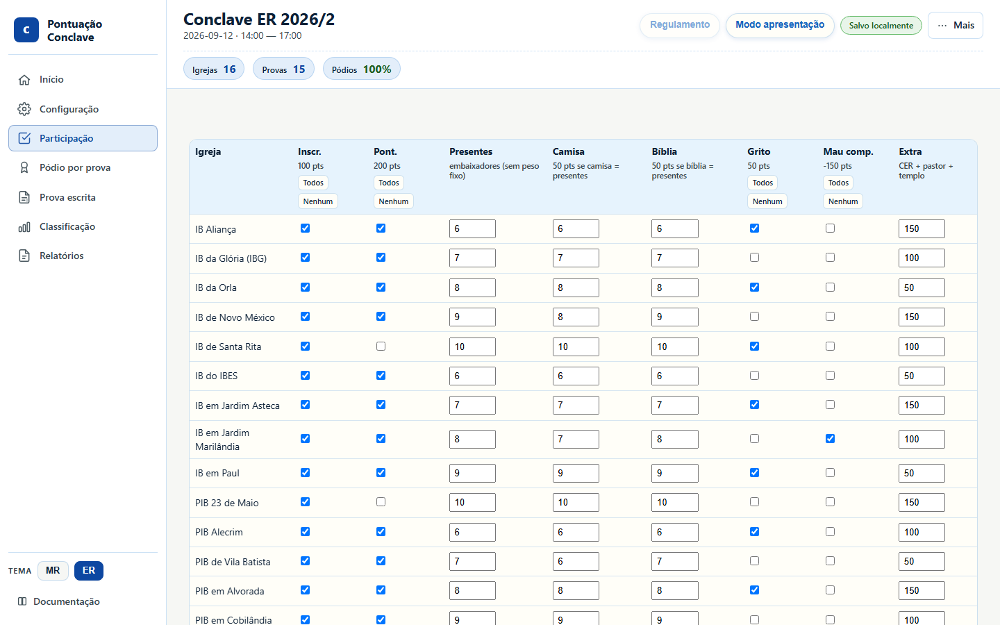
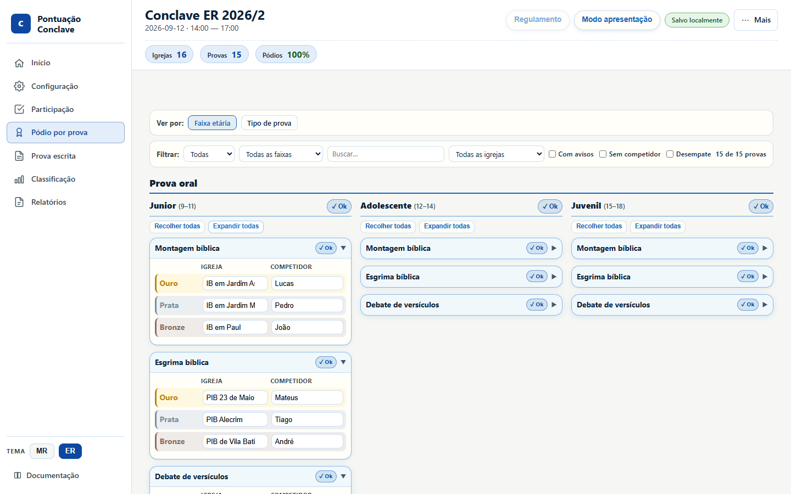
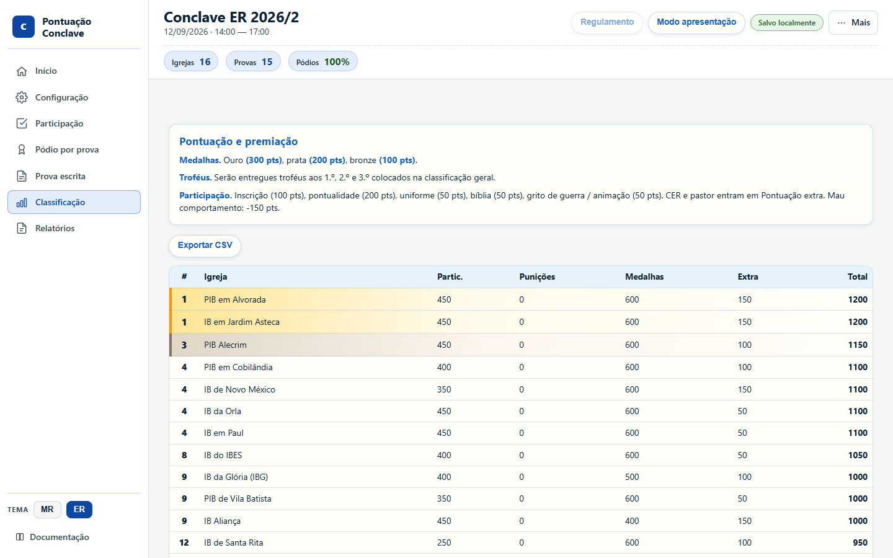
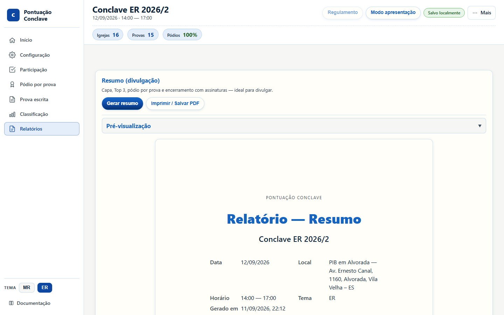
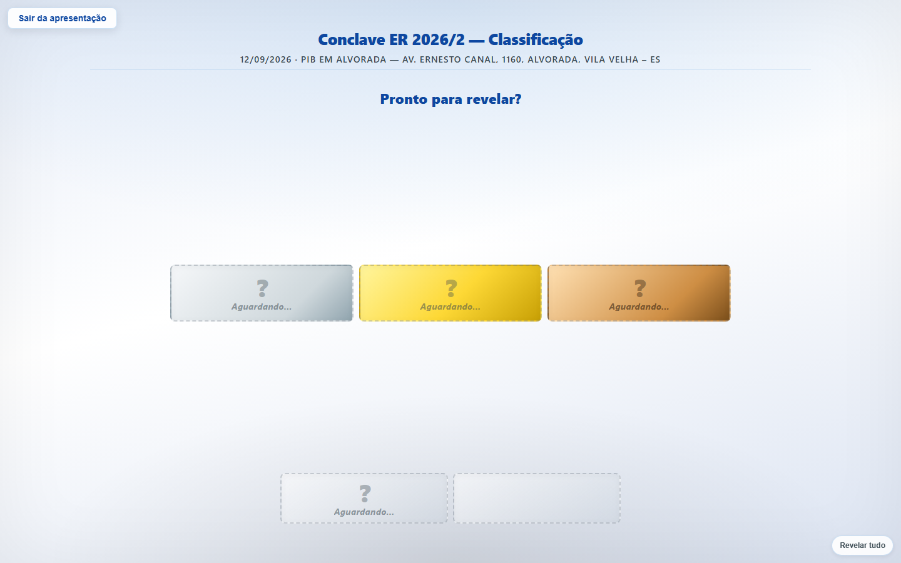

No app, clique em Tutorial na tela (Início ou rodapé). O guia destaca cada área, troca de aba e deixa você preencher participação e pódio de verdade.
Esta página é a versão ilustrada, para acompanhar com capturas.
Abra o app em outra aba se quiser só ler. Melhor treino: na aba Início, clique em Carregar exemplo (o tutorial guiado também faz isso se ainda não houver evento).
No dia do evento use um notebook. O celular serve para consultar, não para lançar a apuração.
Mapa das abas
- Início — resumo do evento e atalhos.
- Configuração — igrejas, provas e pesos. No evento oficial já vem pronta.
- Participação — pontos de cada igreja (inscrição, pontualidade, uniforme).
- Pódio por prova — ouro, prata e bronze. É o que soma medalha no ranking.
- Prova escrita — acertos individuais. Opcional; não altera a classificação.
- Esgrima — sorteio de referências para o líder ditar. Opcional; não altera a classificação.
- Classificação — ranking automático com desempate.
- Relatórios — PDF de divulgação ou arquivo oficial.
A coluna da esquerda (no celular, a barra de baixo) é o mapa inteiro do sistema. O seletor MR / ER só troca as cores. Os pontos vêm do evento carregado, não do tema.

Minuto 1 — Abra o evento
Três caminhos na aba Início:
- Carregar exemplo — treino imediato com o Conclave ER 2026/2.
-
Carregar projeto — retoma um arquivo
.projeto.json(configuração + dados). - Novo evento — só se for montar do zero. Aí o minuto 2 vira cadastro.
Confira o nome no topo. O selo Salvo localmente indica que este navegador já está guardando sozinho.

O menu Mais concentra arquivo: carregar, exportar, eventos salvos e limpar dados. Modo apresentação e Regulamento ficam na barra de cima, fora do menu.
Exporte projeto (não só evento). O projeto leva participação e pódio; o evento leva só a configuração vazia.
Minuto 2 — Confira igrejas e provas
Se o exemplo ou o evento oficial já está aberto, não recadastre nada. Abra Configuração, confira a lista de igrejas e a lista de provas, e siga.

Só mexa aqui se faltar igreja, se o nome estiver errado ou se você criou um evento novo. Dá para colar vários nomes de uma vez (um por linha).

Cada prova tem categoria (Junior, Adolescente, Juvenil) e tipo. Tipo escrita alimenta a aba Prova escrita; tipo oral entra só no pódio. No ER, Evangelhos, Organização e Montagem bíblica são escritas; Esgrima e Debate são orais.
Minuto 3 — Lance a Participação
Uma linha por igreja. O total à direita atualiza na hora.

No ER 2026/2 o check-in começa com inscrição e pontualidade desmarcadas. Marque cada igreja na chegada; quem não vier fica em branco.
O que cada coluna faz no ER:
- Inscr. — inscrição no prazo.
- Pont. — chegou no horário do evento.
- Presentes / Camisa / Bíblia — uniforme e Bíblia só pontuam se o número for igual aos presentes. Não some visitantes nesses campos.
- Grito — grito de guerra.
- Mau comp. — penalidade daquela igreja.
- Extra — CER no pré-conclave e pastor presente. Penalidade de conservação do templo, se houver, entra subtraindo de todas as igrejas.
Se inscrição estiver desmarcada e Presentes = 0, os pontos de participação (inscrição, pontualidade, uniforme, bíblia, grito) ficam zerados. Extra (CER, pastor), medalhas e mau comportamento continuam valendo.
Minuto 4 — Lance o Pódio
Para cada prova, escolha a igreja do ouro, da prata e do bronze. A lista de igrejas aparece sozinha. O nome do competidor é opcional.

Use os filtros no topo (faixa etária, tipo, busca) quando a lista crescer. O selo Ok na categoria indica que os três lugares daquela prova estão preenchidos.
A medalha lançada aqui é o que entra na classificação geral.
A aba Prova escrita registra acertos para gráfico e CSV. Ela não substitui o pódio. Sem ouro/prata/bronze no Pódio, a igreja não soma medalha. No ER, Evangelhos e Organização: medalha só com ≥12 acertos em 20 (60%). Montagem bíblica: mais de 10 erros desclassifica. O app avisa no topo se o pódio de Evangelhos/Organização estiver abaixo de 12/20.
Minuto 5 — Ranking, backup e palco
A classificação soma participação + punições + medalhas + extra e desempatam sozinhas (ouro → prata → provas-chave → nome).

Exportar CSV gera planilha. Antes de projetar ou encerrar, faça o backup
de verdade: Mais → Exportar projeto (pen-drive e nuvem). Só o
.projeto.json abre em outro computador.

Em Relatórios, gere o Resumo (divulgação) ou o Oficial completo (arquivo). Use a impressão do navegador e escolha Salvar como PDF.

Modo apresentação (barra de cima) é o projetor: revelação do 5.º ao 1.º lugar. Clique ou use as setas. Esc sai. A classificação fica congelada até a cerimônia terminar.
Folha de cola
- Tema MR/ER troca cor, não peso.
- Pódio pontua. Prova escrita só documenta acertos. Esgrima só sorteia referências para o líder ditar.
- Backup = Exportar projeto. Evento sozinho não leva o lançamento.
- Os dados ficam neste navegador até você exportar. Trocar de Chrome para Firefox, ou abrir anônimo, parece “perda” de dados.
- Prefira notebook no dia do evento.
Pronto. No dia, o fluxo cabe em uma frase: Participação → Pódio → Classificação → Exportar projeto.
Quer o tour de todas as telas? Vá ao guia visual. Detalhes de cada campo estão no manual de uso.